PEGについての覚書
人生終末期の代替栄養
![]()
2026-06-10
代替栄養とは
代替栄養とは
- 代替栄養（Artificial Nutrition）は、経口摂取が困難な患者に対して、栄養を補給するための医療行為
- 主に、経管栄養（Enteral Nutrition）と静脈栄養（Parenteral Nutrition）の2つに分類される
- 経管栄養は、口から胃や腸に直接栄養を供給する方法で、PEGもその一つ
- 静脈栄養は、CVポートや中心静脈カテーテルを通じて行う
- 皮下点滴も一応入れたり入れなかったり
代替栄養の利点・欠点
| 方法 | メリット | デメリット |
|---|---|---|
| 経鼻胃管 | 簡単に入る 合併症はほぼない 十分に栄養が入る |
抑制が必要 長期使用は難しい |
| 胃瘻 | 十分に栄養が入る 長期に使える 抑制は不要な可能性が高い |
倫理的問題 作成時の合併症の発症 |
| CVポート | 比較的侵襲性は低い 十分な栄養が入る |
肝障害 感染症のリスク |
代替栄養を考える時
- 嚥下機能低下
- 意識障害
- 消化管の機能不全 など
例えば
- 脳梗塞後で嚥下の回復が見込めるが時間がかかる時
- 2-3週間以上、経鼻胃管が必要な時は胃瘻造設が考慮される (Powers ほか 2018年)
- 咽頭部癌の術後、食道癌で経口摂取が困難な時など
- 4週間を超える経管栄養で経鼻胃管よりPEGを推奨 (Tae ほか 2024年)
- 認知機能低下や年齢により恒久的に嚥下機能が低下している時
我々が思う悩む時
- 患者の思い
- 家族の思い
- 医学的適応
- 倫理的適応 などを確認する
家族の思いとは？～世界
- 2/3の認知症がある施設の居住者はCareの第一目標は安楽である
- 26%は非侵襲的な治療のみ希望している(抗菌薬、経静脈治療)
- わずか7%が寿命延伸を第一目標としている
日本においては？
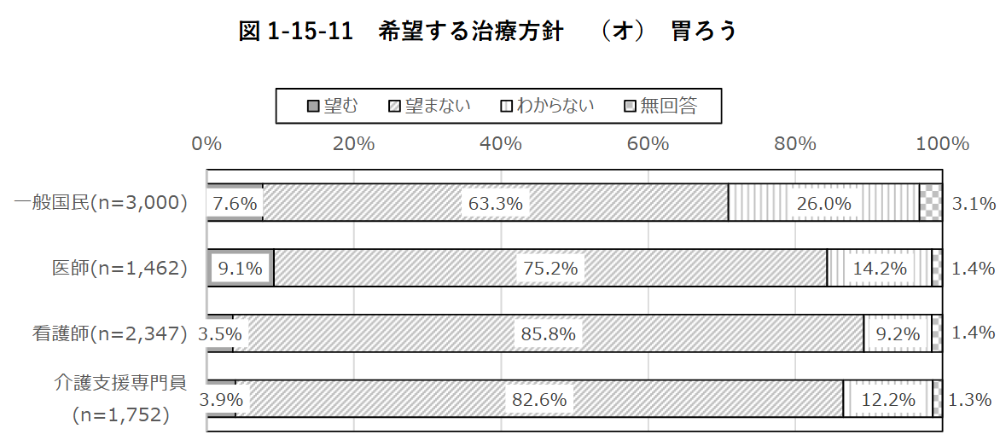
- 無回答の解釈が難しいが、医師も一般国民もほぼ同じ比率
- 約10%が胃瘻を望み、約85%が望まない
PEGの適応の決定方法
- 大きく分けて
- 倫理的適応
- 身体的適応 に分けられる
PEGの倫理的適応
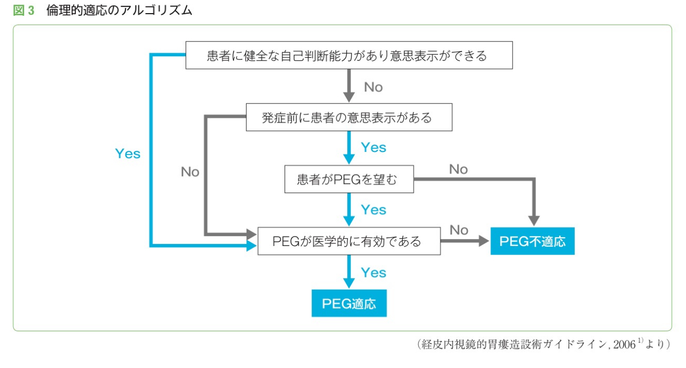
PEGの身体的適応
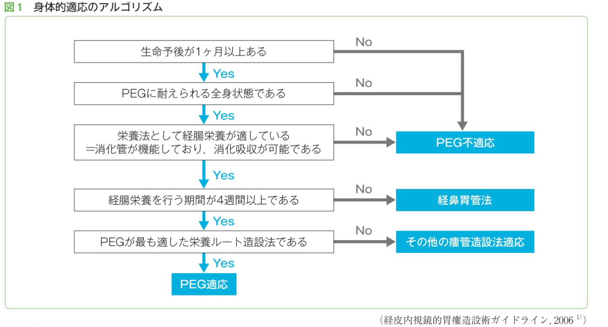
PEGとは
PEGとは
- PEG（Percutaneous Endoscopic Gastrostomy）は、内視鏡を 用いて胃瘻を作成する手法
- 1979年に米国で開発され、世界中に広まった
- 1980年代には世界中の人工栄養の主流となった
(鈴木 2012年)
PEGの構造
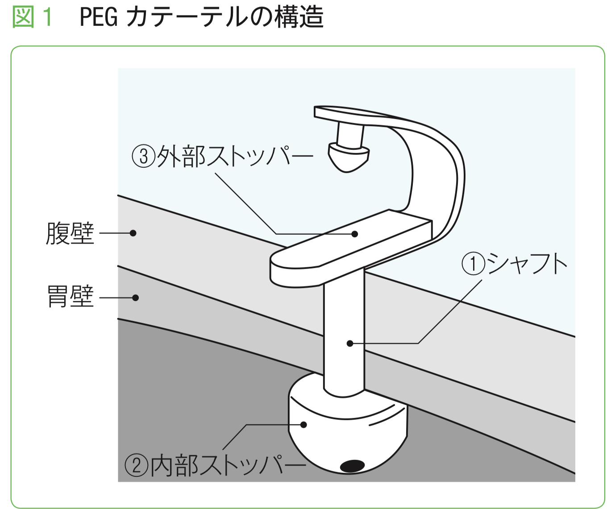
PEGの種類
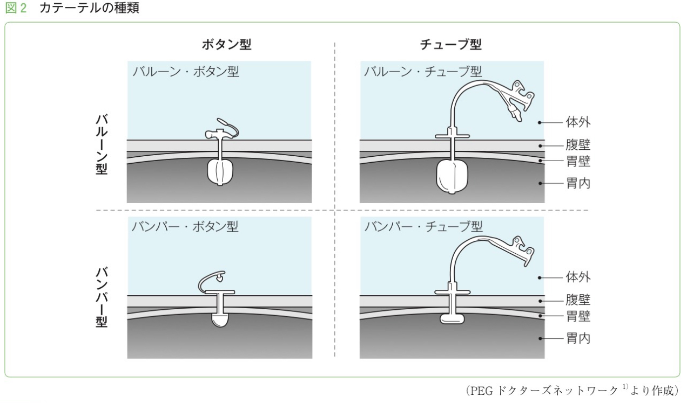
- 外部ストッパーと内部ストッパーで大別される
- 外部ストッパー: ボタン型/チューブ型
- 内部ストッパー: バルーン/バンパー型
外部ストッパーについて
| 外部ストッパー | メリット | デメリット |
|---|---|---|
| ボタン型 | 自己抜去のリスクが少ない カテーテル汚染が少ない |
栄養剤との接続が複雑 交換時までシャフト長を変更できない |
| チューブ型 | 栄養剤との接続が容易 | 自己抜去のリスクが高い |
- ボタン型が良いのは
- 若くて理解力がある元気な患者
- 逆に自己抜去のRiskが非常に高い患者で良い適応
- チューブ型が良いのは
- 理解力があるが麻痺などで細かい作業が困難な患者で良い適応
PEGの入れ方
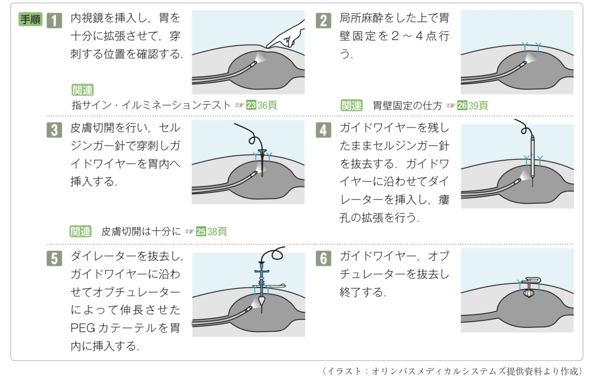
- 基本的には内視鏡を用いて皮膚から胃壁を通して胃にカテーテルを挿入する
- 開腹でやる事もある
- 入れ方でpush/pull法、Introducer法などがある
- 当院では基本的にはIntroducer法/Introducer変法との事
PEGの短期死亡率
- 日本の2007-2010年のDPCデータ(n = 64,219)
- 30日死亡は6.2%, 院内死亡は11.9%
- 特に、男性、高齢者などが高リスク
| subgroup | 粗の院内死亡率 |
|---|---|
| 70-89歳 vs. 90歳以上 | 12.0% vs. 14.6% |
| 男性 vs. 女性 | 12.4% vs. 9.6% |
| 認知症のみ vs. 認知症+肺炎 | 4.8% vs. 12.1% |
| 脳血管疾患のみ vs. 脳血管疾患+肺炎 | 5.6% vs. 14.7% |
PEGの周術期合併症
- 2週間以内の早期合併症と晩期合併症に別れる
- 早期合併症の方が予後が悪い
- 大きく分けて、感染症、出血、消化管穿孔、その他に分けられる
- 感染症は創部感染、腹膜炎、肺炎など
- 出血は胃粘膜の損傷、血管損傷
- 消化管穿孔は胃壁の損傷、腸管損傷
- PEG特有なのはバンパー埋没症候群やボールバルブ症候群
PEGの周術期合併症の発症率
- 世界的には5-20% (Stein ほか 2021年) (Stenberg ほか 2022年)
- 合併症自身と死亡は相関しない (Anderloni ほか 2019年)
- 日本でも同程度(上記、DPCデータだと約5%、単施設だと約20%)
- 感染症が80%で最多(肺炎は約25%、創部感染が約8%)
- 緊急手術が必要な状態はPEG施行のうち1.6% (Mawatari ほか 2020年)
合併症各論～バンパー埋没症候群とは
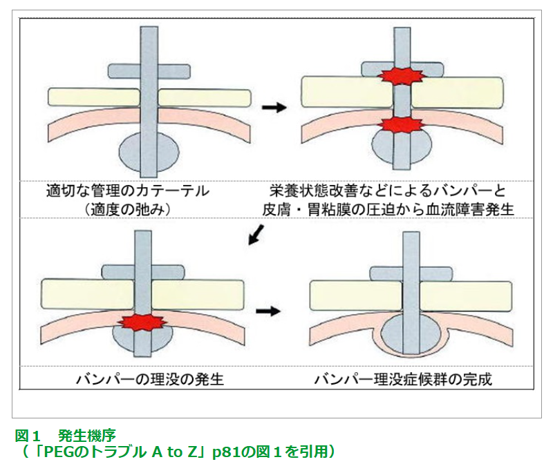
- PEGの内部のバンパーの締まりが強すぎて 胃粘膜の血流障害を起こすこと
- 内部バンパーは徐々に胃壁に埋没してしまう
- 適切なタイミングでバンパーを緩める必要がある
- 当院では24時間後
合併症各論～ボールバルブ症候群とは
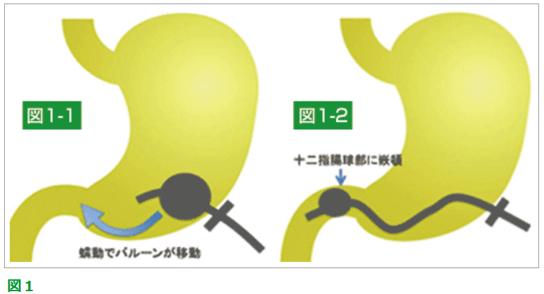
- バルーン型カテーテルの先端バルーンが十二指腸に嵌頓してしまう
- 嘔吐を繰り返すが胆汁や栄養剤が出てこないのが特徴
- バルーンを虚脱させ、胃内に戻す
PEGの交換
- 日本では
- バルーン型だと1-2ヶ月毎が多い
- 日本ではバンパー型だと4-6ヶ月毎が多い (NPO法人PDN, 日付なし)
- 海外のガイドラインではバルーン型だと3-6ヶ月毎 (Tae ほか 2023年)
PEGの交換方法
- カテーテル非切断法とカテーテル切断法がある
- カテーテル切断法は内部ストッパーを一旦切り離し、古いカテーテルを抜き去った後、新しいカテーテルを用手的に挿入した後、内視鏡で古い内部ストッパーを回収する方法
- いずれにせよ、PEG交換後の胃内の留置確認が必要
PEG交換後の胃内留置確認法
| 確認法 | 内容 |
|---|---|
| 間接確認法 | 送気音による確認（非推奨） 胃内容物の吸引による確認（非推奨） 色素液注入による確認（スカイブルー法） レントゲン設備を利用した確認 |
| 直接確認法 | 経胃瘻カテーテル内視鏡による確認 経鼻/経口内視鏡による確認 |
- 当院だと、非切断法でインジゴカルミン液を用いたスカイブルー法の併用が多い
PEGの長期予後
PEGの長期予後総論
- PEGの患者の観察研究の予後はかなり差がある
- 傾向として日本だと長く、欧米だと短い
- これはPEGをやっている患者層の差が大きそう
重症認知症の場合
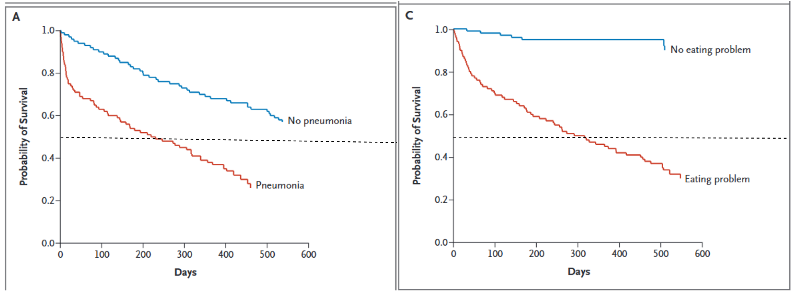
- 2009年のCASCADE trialにおいて、肺炎合併の重度認知症患者の中央値は6ヶ月
重症認知症のSystematic review
- 最低限抑えるべきSystematic review
- FAST 7C+以降の患者において、PEGは
- 生命予後
- 栄養状態
- QOL をいずれも改善しない
非重症認知症の場合は
- 2014-2018年のカナダの大規模データ
- 65歳以上の認知症のPEG患者(実際の平均年齢は約84歳、 n = 1,312)
- 1年生存率は約50%
日本のデータ
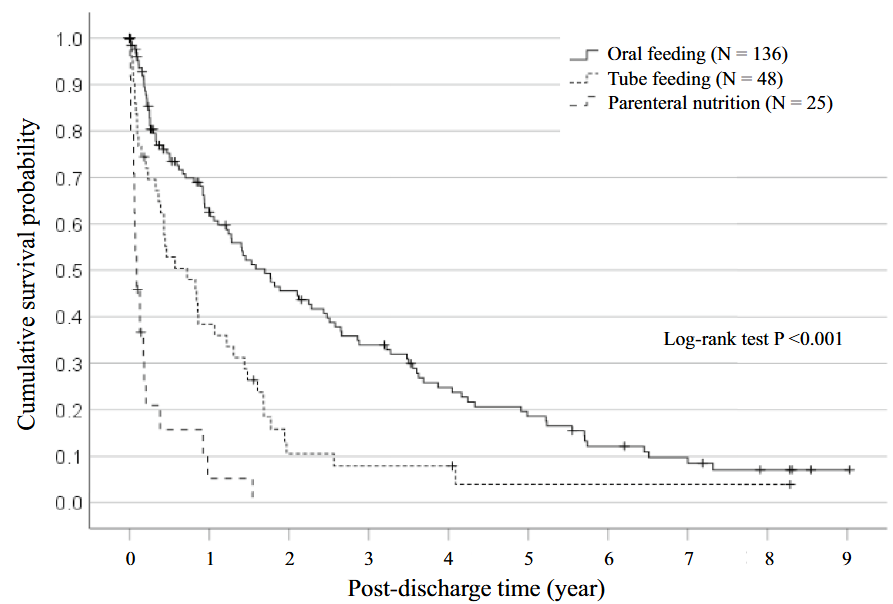
- 聖隷浜松病院のデータ
- 全体だと、誤嚥性肺炎患者のうち半数は1年以内に亡くなる
- 特に、経口摂取できないと誤嚥性肺炎の予後は極めて悪い
とは言え
- PEGの患者の研究の予後は研究によってめちゃくちゃ違う
- 古い日本の研究だと、2年以上生きている人も半数超えるものもある (Suzuki ほか 2010年)
- やはり、手技というよりは患者背景による
- 特にRCTがないので、非PEG患者の予後との比較は不可能
- 一つ一つの症例で悩むくらいが良いのかも
Take home message
- PEGの適応は倫理的適応と身体的適応を考慮する
- PEGの短期合併症はそこそこあるが、適切に管理すれば問題ない
- PEGの長期予後は患者背景によるが、一人ひとり迷うくらいがちょうど良い
最後に
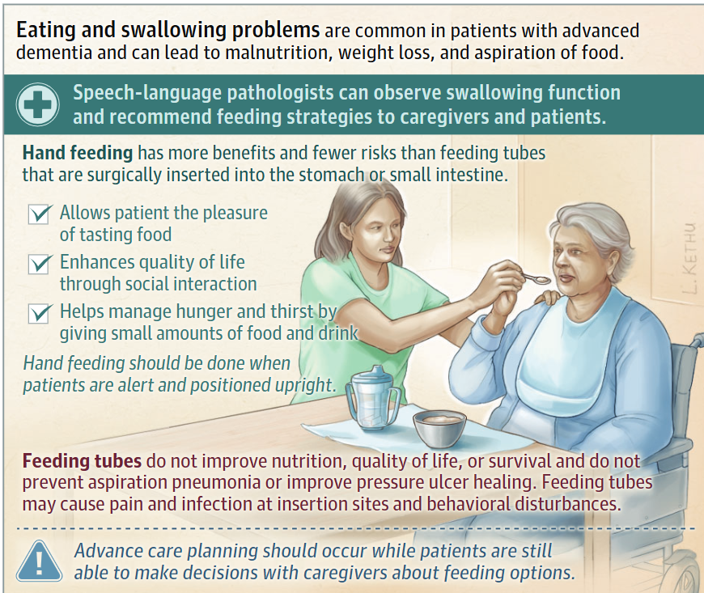
- 最後まで手で食べることが重要なんだと思う
References
Anderloni, Andrea, Milena Di Leo, Franco Barzaghi, ほか. 2019年. 「Complications and early mortality in percutaneous endoscopic gastrostomy placement in lombardy: A multicenter prospective cohort study」. Digestive and liver disease: official journal of the Italian Society of Gastroenterology and the Italian Association for the Study of the Liver 51 (10): 1380–87. https://doi.org/10.1016/j.dld.2019.03.024.
Davies, Nathan, Yolanda Barrado-Martín, Victoria Vickerstaff, ほか. 2021年. 「Enteral tube feeding for people with severe dementia」. Cochrane database of systematic reviews 8 (8): CD013503. https://doi.org/10.1002/14651858.CD013503.pub2.
Estrada, Leah V, Preeti N Malani, と Caroline A Vitale. 2025年. 「Eating and swallowing problems in people with advanced dementia」. JAMA: the journal of the American Medical Association 334 (6): 550. https://doi.org/10.1001/jama.2025.7857.
Honda, Yuki, Yoichiro Homma, Mieko Nakamura, Toshiyuki Ojima, と Kazuhito Saito. 2024年. 「Extremely poor post-discharge prognosis in aspiration pneumonia and its prognostic factors: A retrospective cohort study」. Dysphagia 39 (5): 837–45. https://doi.org/10.1007/s00455-023-10665-z.
Lennon, Matthew J, Ben Chun Pan Lam, Darren M Lipnicki, ほか. 2023年. 「Use of antihypertensives, blood pressure, and estimated risk of dementia in late life: An Individual Participant Data meta-analysis」. JAMA Network Open 6 (9): e2333353. https://doi.org/10.1001/jamanetworkopen.2023.33353.
Mawatari, Fumihiro, Hisamitsu Miyaaki, Tetsuhiko Arima, ほか. 2020年. 「Procedure-related complications and survival after gastrostomy: Results from a Japanese cohort」. Annals of nutrition & metabolism 76 (6): 413–21. https://doi.org/10.1159/000513616.
Mitchell, Susan L, Joan M Teno, Dan K Kiely, ほか. 2009年. 「The clinical course of advanced dementia」. The New England Journal of Medicine 361 (16): 1529–38. https://doi.org/10.1056/NEJMoa0902234.
NPO法人PDN. 日付なし. PDNレクチャー Chapter1 PEG. 編集者: 敏郎, 髙橋美香子, 順博, 聡, と 徹. NPO法人PDN. https://www.peg.or.jp/lecture/peg/.
Powers, William J, Alejandro A Rabinstein, Teri Ackerson, ほか. 2018年. 「2018 guidelines for the early management of patients with acute ischemic stroke: A guideline for healthcare professionals from the American Heart Association/American stroke association」. Stroke; a journal of cerebral circulation 49 (3): e46–110. https://doi.org/10.1161/STR.0000000000000158.
Sako, Akahito, Hideo Yasunaga, Hiromasa Horiguchi, Kiyohide Fushimi, Hidekatsu Yanai, と Naomi Uemura. 2014年. 「Prevalence and in-hospital mortality of gastrostomy and jejunostomy in Japan: a retrospective study with a national administrative database」. Gastrointestinal endoscopy 80 (1): 88–96. https://doi.org/10.1016/j.gie.2013.12.006.
Stall, Nathan M, Kieran L Quinn, Jenny T van der Steen, Johanna Trimble, A Mark Clarfield, と Susan L Mitchell. 2025年. 「Enteral tube feeding in people with advanced dementia」. BMJ (Clinical research ed.) 389 (5月): e075326. https://doi.org/10.1136/bmj-2023-075326.
Stein, Daniel J, Matthew B Moore, Gila Hoffman, と Joseph D Feuerstein. 2021年. 「Improving all-cause inpatient mortality after percutaneous endoscopic gastrostomy」. Digestive diseases and sciences 66 (5): 1593–99. https://doi.org/10.1007/s10620-020-06396-y.
Stenberg, K, A Eriksson, C Odensten, と D Darehed. 2022年. 「Mortality and complications after percutaneous endoscopic gastrostomy: a retrospective multicentre study」. BMC gastroenterology 22 (1): 361. https://doi.org/10.1186/s12876-022-02429-0.
Suzuki, Yutaka, Seryna Tamez, Akihiko Murakami, ほか. 2010年. 「Survival of geriatric patients after percutaneous endoscopic gastrostomy in Japan」. World journal of gastroenterology: WJG 16 (40): 5084–91. https://doi.org/10.3748/wjg.v16.i40.5084.
Tae, Chung Hyun, Ju Yup Lee, Moon Kyung Joo, ほか. 2023年. 「Clinical practice guidelines for percutaneous endoscopic gastrostomy」. Clinical endoscopy 56 (4): 391–408. https://doi.org/10.5946/ce.2023.062.
Tae, Chung Hyun, Ju Yup Lee, Moon Kyung Joo, ほか. 2024年. 「Clinical practice guideline for percutaneous endoscopic gastrostomy」. Gut and liver 18 (1): 10–26. https://doi.org/10.5009/gnl230146.
人生の最終段階における医療・ケアに関する意識調査事業. 2022年. 人生の最終段階における医療・ケアに関する意識調査報告書. Https://www.mhlw.go.jp/toukei/list/dl/saisyuiryo_a_r04.pdf.
横浜吏郎, と 青島優. 2009年. 「経皮内視鏡的胃瘻造設術後の早期死亡とその危険因子に関する検討」. Nihon Shokakibyo Gakkai zasshi [The Japanese journal of gastro-enterology] 106 (9): 1313–20. https://doi.org/10.11405/nisshoshi.106.1313.
鈴木裕. 2012年. 「胃ろう栄養の適応と問題点」. 日本老年医学会雑誌 = Japanese journal of geriatrics 49 (2): 126–29.
Medicine · Statistics · Home